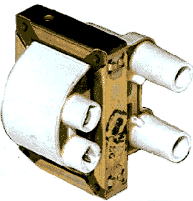
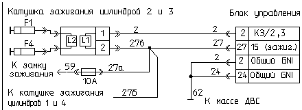

главная → ЭСУД ГАЗ
Катушка зажигания двухвыводная 3012.3705 (РФ)
Назначение электромеханизма. Принцип действия
- Катушка зажигания предназначена для формирования высоковольтного напряжения с целью воспламенения топливо-воздушной смеси в цилиндрах двигателя.
- Катушка зажигания представляет собой высоковольтный импульсный трансформатор с замкнутым магнитопроводом, вторичная и первичная обмотка которого электрически не связаны между собой.
- Накопление энергии заряда в катушке производится путем кратковременного формирования импульса тока через ее первичную низковольтную обмотку. В момент прерывания импульса тока катушка трансформирует энергию во вторичную высоковольтную обмотку, которая через высоковольтные провода подается на свечи зажигания, вызывая искровой разряд в цилиндрах двигателя.
- Одна катушка зажигания формирует высоковольтные импульсы зажигания для первого/четвертого цилиндров, а вторая—импульсы зажигания для второго/третьего цилиндров. Электропитание бортсети на катушки зажигания подается от замка зажигания.
- Время накопления заряда в катушке зажигания регулируется блоком управления в зависимости от напряжения бортовой сети и режима работы двигателя.
Конструкция электромеханизма

- По конструкции катушка сухая, то есть немаслонаполненная, и имеет:
- магнитопровод с обмоткой;
- два штекера для подключения низковольтных цепей электропитания и управления;
- два изолированных гнезда для подключения высоковольтных проводов.
- В магнитопроводе выполнены четыре отверстия для крепления катушки винтами (болтами) М5.
Параметры электромеханизма
- Напряжение электропитания: 6...18В.
- Сопротивление первичной обмотки: 0,35±0,02 Ом.
- Сопротивление вторичной обмотки: 13±0,2 Ом.
- Индуктивность первичной обмотки на частоте 100 Гц: 2,22±0,2мГн.
- Выходное напряжение: не менее 24кВ.
- Ток коммутации в первичной цепи: не более 7,5А.
- Энергия искрового разряда: не менее 50мДж.
- Длительность разряда: не менее 2,2мс.
- Частота коммутации тока в первичной цепи: 1...133Гц.
- Масса катушки: 0,65 кГ.
- Для соединения катушки зажигания со свечами зажигания должны использоваться высоковольтные провода с распределенным помехоподавляющим сопротивлением. Общее сопротивление высоковольтного провода с учетом помехоподавляющего резистора в наконечнике должно быть в пределах 6 кОм.
Установка и монтаж электромеханизма на автомобиле
- Катушки зажигания установлены и закреплены на верхней (клапанной) крышке двигателя:
- для двигателей УМЗ-4213.10 и УМЗ-420.10—на общем кронштейне;
- для двигателей ЗМЗ-4062.10, ЗМЗ-409.10 и УМЗ-420.10—отдельно.
- Подключение низковольтных обмоток катушек к жгуту проводов производится одиночными гнездовыми муфтами, а высоковольтные провода подключаются ко вторичным обмоткам катушек через специальные изолированные гнезда.
Аналоги электромеханизма
- Двухвыводная катушка зажигания 3012.3705 (ОАО «АТЭ-2», г. Москва) имеет ряд аналогов:
- катушка зажигания ZSK 2x2 0221503407 (BOSCH);
- катушка зажигания 406.3705 (ОАО «Завод «ЗОНД» г. Звенигово);
- катушка зажигания 406.3705 (ОАО «АПЗ» г. Арзамас).
Внешние проявления неисправностей цепей электромеханизма


- Лампа неисправности горит после включения зажигания. Самодиагностика блока фиксирует коды неисправности 91...94 (98), или 231...234 (238), или 241...244 (248).
- Проверить исправность цепей катушек зажигания 27а, 1(27б), 2(27в).
- Двигатель работает с перебоями («двоение»). Лампа неисправности горит. Самодиагностики блока фиксирует коды неисправности 91...94 (98), или 231...234 (238), или 241...244 (248).
- проверить исправность цепей катушек зажигания 1(27б) или 2(27в);
- проверить исправность и, при необходимости, замените катушку зажигания на исправную. После установки новой катушки проверьте исправность соответствующего силового канала блока управления.
- Двигатель работает с перебоями («троение»). Лампа неисправности не горит (нет неисправностей системы).
- Выявить методом отключения форсунок неработающий цилиндр. Проверить параметры неработающей свечи зажигания или высоковольтного провода вместе с наконечником. Очистить свечу или наконечник от нагара. При необходимости заменить элементы на исправные.
|